Ficha Iluminada
Catálogo de componentes do ded · ver o protótipo da exploração
Paleta
Tipografia
Grenze Gotisch · títulos, fitas, capitulares e o número do d20 (com algarismos alinhados) A Masmorra de Drakmor · Rolar o d20
Alegreya · narrativa e todos os outros números A luz da lua entra pelas rachaduras no teto, lançando sombras misteriosas. Itálico para o que está apagado. 0 1 2 3 4 5 6 7 8 9 · +3 −1 · 65 / 150
Marcellus SC · rótulos de letras (nunca números) Força · Destreza · Constituição · O que você faz?
Fitas e botão
Botão secundário
Para ações de apoio; a ação principal fica com a fita rubra.
Vida, armadura, ouro
Vida do inimigo
Atributos
- +316Positivo
- +010Neutro
- −18Negativo
Equipamento
- Espada
- vazio
Bloqueado durante o teste de dado
- Espada
- vazio
Missões
- Ativa1 de 3
- Concluídafeita
- Inativanão iniciada
Cabeçalho
- Campo
- Guerreiro
- Campo vazio
- escolhido no nível 3
Vitral e nível


Escolha o seu personagem
Card de herói: cada um é um <label> com um rádio nativo escondido. A moldura rubra e o selo de cera do escolhido vêm só do CSS (:has(input:checked)); o Mago já vem marcado.
Narrativa e ações
Você está na entrada da antiga Masmorra de Drakmor. Degraus de pedra esculpida levam para a escuridão. Lendas falam de tesouros dentro, mas também de armadilhas mortais e monstros temíveis.
O que você faz?
Teste de Destreza · dificuldade 10
14 + 1 (Destreza) = 15 contra 10
Resultados do d20
20 + 5 (20 natural) + 3 (Força) = 28 contra 10
Crônica
Entrada comum: você comprou Tocha por 2 de ouro.
Teste de Inteligência: 15 − 1 = 14 contra 10. Sucesso.
Teste de Destreza: 6 + 1 = 7 contra 10. Falha.
Crônica vazia
Card de inimigo
Goblin
12 / 12 de vida
Aranha
6 / 16 de vida
Fantasma de Drakmor
0 / 40 de vida
Retrato no medalhão rubro, vida e armadura. A barra é a da ficha em vinho escuro (.barra-vida-inimigo, preenchida por --v). Os selos de vitória e de derrota já nascem pintados e carimbam com .visivel; .derrotado apaga o retrato. O de derrota (cera escura) cai no mesmo lugar quando o herói tomba.
Ações de combate
O que você faz?
O que você faz?
Vez do Goblin
As quatro ações de um guerreiro, na peça das escolhas (.escolha.acao-combate). Em recarga ou sem poção, .indisponivel apaga o nome e o clique só explica o motivo no relato; na vez do inimigo, aria-disabled="true" faz as ações esperarem sem perder o foco.
Efeitos em jogo
- Magias 2/3
- Fúria · 2 turnos
- Escudo sagrado +6
- Veneno no Goblin · 3 turnos
Lista vazia
Pílulas sob o card do inimigo. Em rubro (.condicao-alvo), o efeito sobre o inimigo.
Impacto
Corte e magia no retrato do inimigo; cura (e o golpe que o herói leva) na vida da ficha. O jogo anima só a opacidade, com Web Animations (0 a 0,9 e de volta, em 420 ms); aqui o brilho fica parado.
d20 do combate
Você tirou 17
O Goblin tirou 14 + 1 = 15 contra sua armadura 17
O d20 da bandeja, menor, sem título nem botão: a ação já rola. Os quatro selos nascem pintados, e o desfecho do relato carimba um deles; a rolagem do inimigo aparece sem giro e sem selo.
Painel de combate
Goblin
7 / 12 de vida
- Magias 3/3
O Goblin tirou 18 + 1 = 19 contra sua armadura 14
O que você faz?
Relato do combate
O combate com o Goblin começou!
Você se prepara para um ataque físico...
Rolagem de ataque: 17 + modificadores (0) = 17 contra armadura 10
Acertou! Você causou 5 de dano no Goblin.
Turno do inimigo! O Goblin se prepara para atacar...
O Goblin ataca e rola: 18 + modificadores (1) = 19 contra sua armadura 14
Acertou! Você levou 4 de dano do Goblin.
As linhas da crônica, com o tom do desfecho: o acerto do herói em verdete, o golpe que ele leva em rubro. É a mesma luta do painel de combate.
Janela
Título da janela
Um subtítulo em itálico, opcional, diz para que a janela serve.
Uma seção
A linha de status diz o que a última ação fez.
Loja, especialização, diário, mapa e fim da aventura são <dialog class="janela"> com uma .folha.janela-folha dentro, abertos por abrirJanela(id). Escape, o medalhão e um clique no fundo fecham; a obrigatória (especialização) só fecha pela escolha.
Aviso
Mochila cheia! Consuma uma poção para liberar espaço.
Um aviso de falha, com o ícone em rubro.
Um aviso de sucesso, em verdete.
Substitui o alert(): avisar(texto, { tom, icone }) sobe do alto da tela e some sozinho.
Mapa
Mapa da masmorra
Escolha um lugar vizinho ainda não visitado para ir até ele.
- Você está aqui
- Visitado
- Pode ir
- Selado
- Alavanca puxada
Os lugares são botões sobre um SVG só de traços: o caminho percorrido sai em sépia, o aberto (daqui até aonde dá para ir) tracejado e o desconhecido tracejado e apagado. Só o vizinho ainda não visitado (e com cena) leva a algum lugar; o vizinho selado responde com a barreira. No combate, no d20 e na especialização, todos ficam com aria-disabled e a linha de status diz por quê:
Não dá para fugir pelo mapa no meio do combate.
Ícones
game-icons.net, CC BY 3.0 (créditos em ded/ui/CREDITOS.md). Use com <svg><use href="../ui/icones.svg#i-nome"/></svg>; a cor vem de color.
Ornamentos
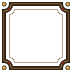
moldura.svg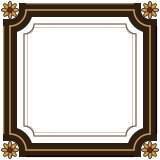
moldura-folha.svgfita.svgfita-rubra.svg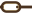
corrente.svg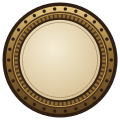
medalhao.svg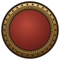
medalhao-rubro.svg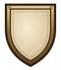
escudo.svgmoeda.svg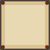
capitular.svg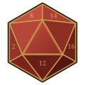
d20.svg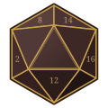
d20-apagado.svg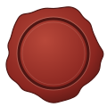
selo-cera.svg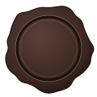
selo-cera-escuro.svg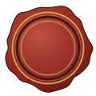
selo-cera-critico.svgdragao.svgvitral.svg
Gerados por node ded/tools/gerar-ornamentos.mjs; não edite os SVGs à mão.